The Veneto Gravel is a multi-day bikepacking race through northern Italy — gravel roads, farm tracks, vineyard paths, and enough kilometres between checkpoints that you start negotiating with yourself about what you actually need versus what you thought you needed when you signed up.

Race start. Everyone looking calm. Nobody is calm. That's fine.
I lined up at the start with the passport — the finisher's booklet you collect stamps in at checkpoints along the route. The passport makes it real. You hold it and think: I am going to get every one of these stamped. Then the race begins and you think about other things.
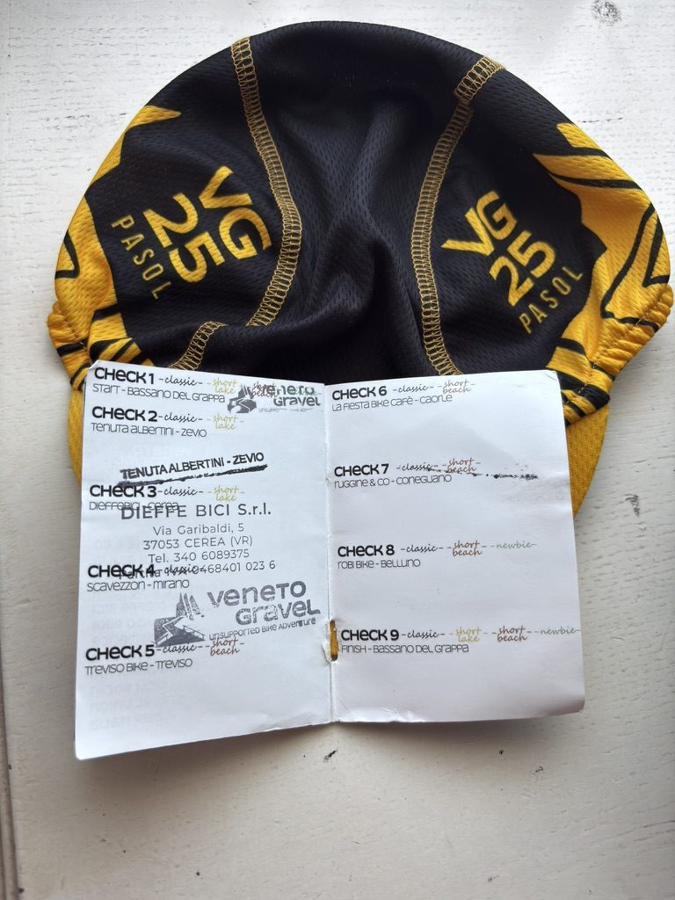
The passport. Every stamp is a checkpoint reached. Every checkpoint is a negotiation won.
Waking up in nature
The first night, I slept outdoors. The shelter was basic — a tarp situation, basically — and the ground was whatever the ground was. But waking up in the open, with the Veneto fields around you and the sky still dark at the edges, is the kind of thing that makes you remember why you do this.
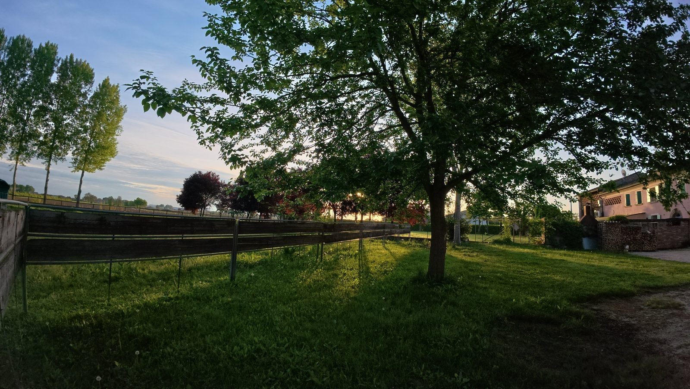
First light. Ground under the sleeping mat, sky above. Everything else can wait.
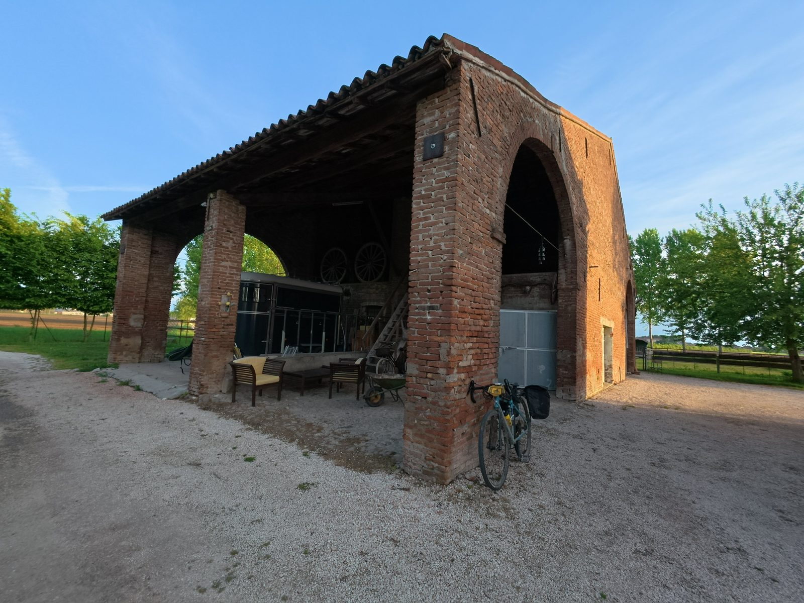
Shelter for the night. Not much. More than enough.
The ranch family
The next night was different. Through a combination of luck and slightly desperate communication, I ended up sleeping at a family ranch house. A proper bed. A family who had seen enough cyclists pass through to know what we needed without being asked.
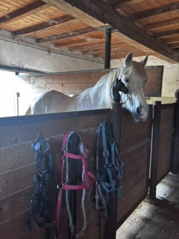
The ranch house. Slept here. Still thinking about it.
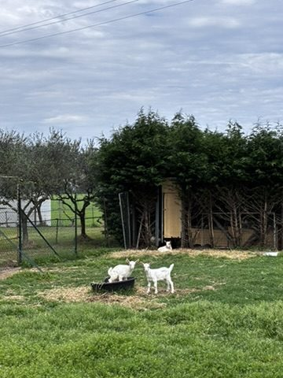
The family. You don't forget people like this. They fed me, pointed at the bed, and asked no complicated questions.
I love horses. The ranch had horses. This was not the worst situation I have ever found myself in after a very long day on a gravel bike.

I love horses. This is not a complicated statement. It is simply true.
The GPS situation
On one of the days, the GPS failed. Not completely — it still showed a position. But it took me on a line that bypassed Lake Garda entirely. I only realised when I looked up and the lake was not where the lake was supposed to be.
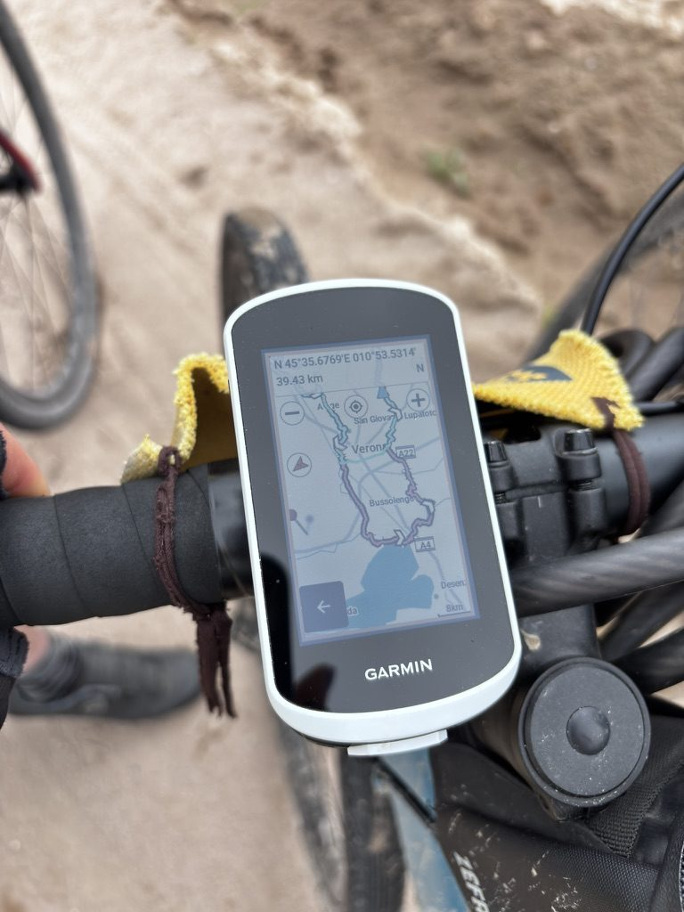
GPS failed. Missed Lake Garda. It's fine. I'm fine. Everything is fine.
Lake Garda. One of the most famous lakes in Italy. I was in Italy, on a bicycle, for multiple days — and I missed it because my GPS decided to be creative (and also because my orientation skills did not improved much, I should have noticed). I am choosing to find this funny. It gets funnier each time I tell it.
The green and the rain
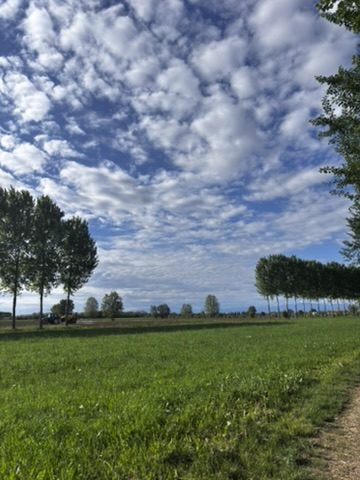
Green paths, blue sky. On the good days, it looks like this. On the other days — see below.
The rain came in on day three. Not a soft Italian drizzle — actual rain, the kind that makes your gloves useless and your vision worse and your motivation a subject of serious internal debate. The path became mud in places. The gravel became slow.
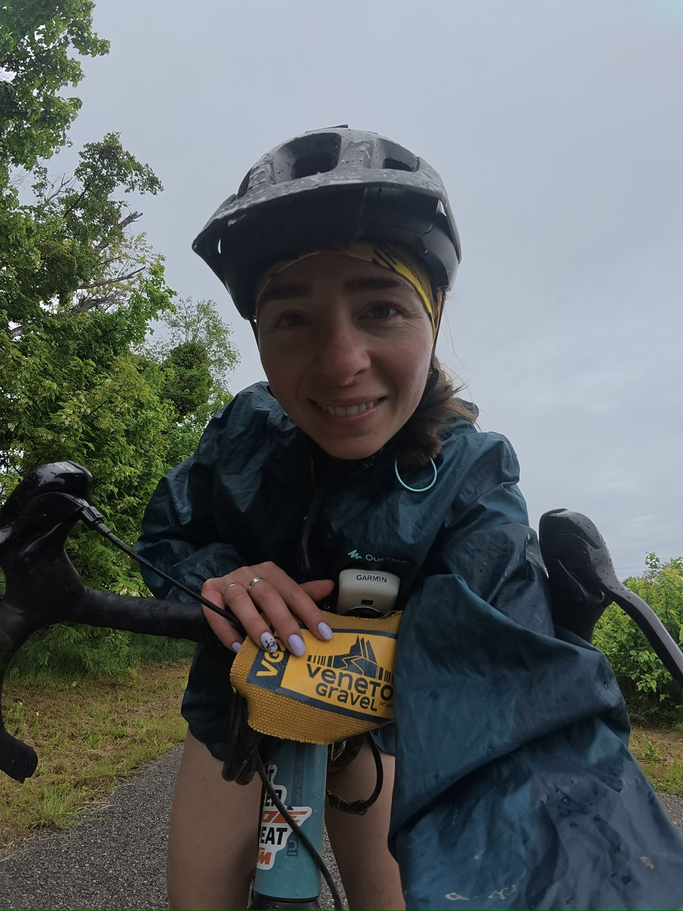
Rain. Discomfort. Pushing anyway. This is what it looks like. It's also what it feels like.
I pushed. You always push. Not because it's heroic — it's not — but because stopping in the rain in the middle of a gravel route in northern Italy is worse than continuing. So you continue. You put your head down and you continue and at some point the rain stops or you stop caring about it, which amounts to the same thing.
Strawberries
There was a woman at a checkpoint selling strawberries. Small, local, very red. The price was basically nothing. I ate more than I should have and didn't regret it for a second.
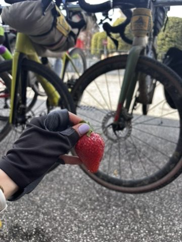
Strawberries taste better when you're tired. This is empirical fact. I have the data.
Food on a multi-day event takes on a different significance. You're not eating because you're hungry in the normal sense — you're eating because you need to keep going, and also because the strawberries are very good, and both of those things are true at the same time.
The impressive old lady
At one of the checkpoints, there was an old woman. She had come to watch — or perhaps to participate, it was not entirely clear. She was at least eighty. She had the look of someone who had been doing difficult things outdoors since before most of the other participants were born.
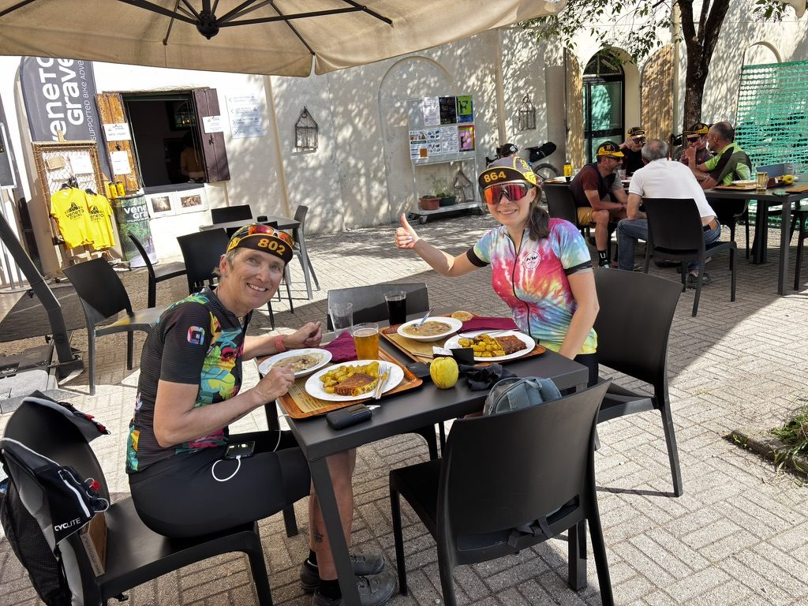
This lady. She didn't say much. She didn't need to. Some people just have that.
I watched her for a moment and felt what you feel sometimes in the presence of people who have lived fully — a mix of admiration and something like resolve. I would like to be like that, eventually. Still showing up. Still curious.
The day the Pope died
On one of the stages, news came through. Pope Francis had died. It was April 21st. The message spread through the riders at a checkpoint — someone checked a phone, said something, and the information moved quietly from person to person.
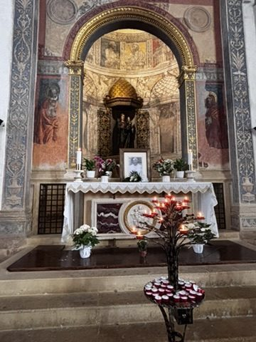
April 21st. A quiet moment. Some things stop everything, even a race.
We were in Italy — deeply Catholic Italy, in the rural Veneto, where the church is woven into the landscape in a way that isn't merely decorative. It meant something here. People paused. Some prayed. And then, because the route continued and the kilometres didn't care about history, we kept going.
But I thought about it for the rest of the day. How strange, to be moving through the countryside on a bicycle on a day like that. How strange and ordinary and human.
The sunset, the pizza, the end
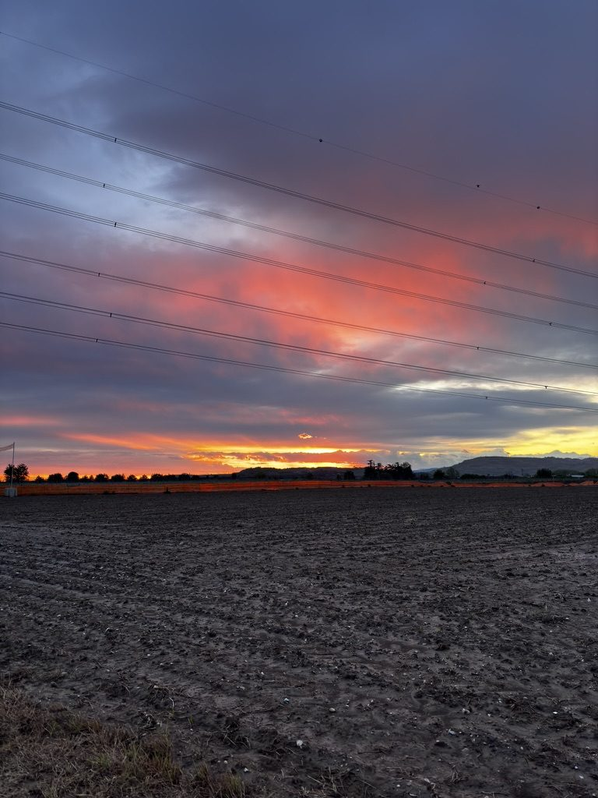
Sunset chaser. You ride toward it and it keeps moving. You ride anyway.
On the last day, I hit a milestone. Not a distance milestone — a pizza milestone. There is a price at which pizza stops being a meal and becomes a statement about how Italy understands food. I found that price. I will not reveal it here because it would only make you feel bad about every other pizza you've ever bought.
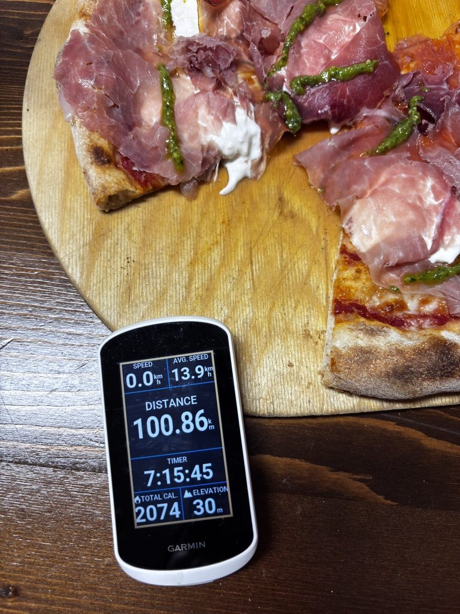
The milestone. In pizza form. Perfect.
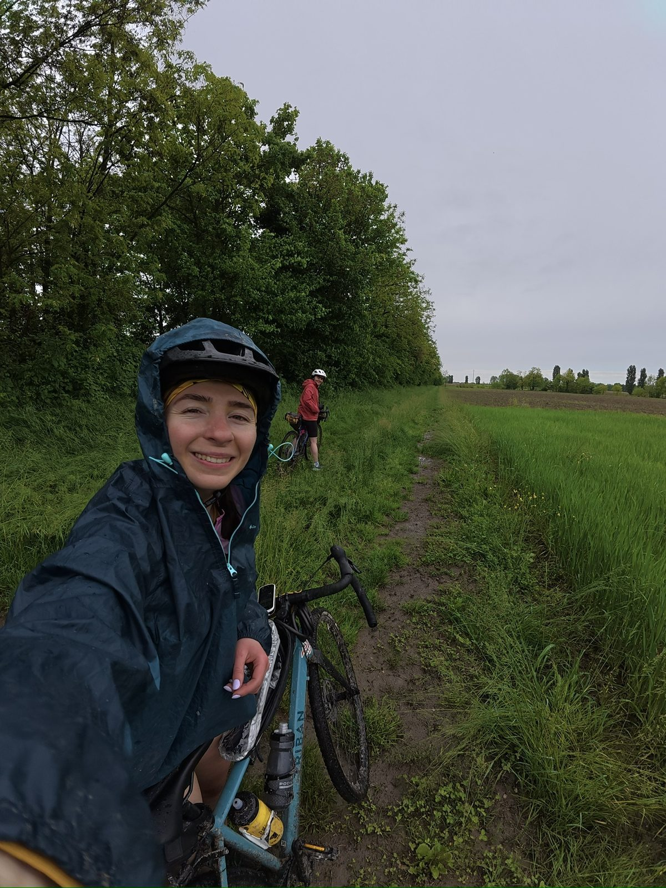
The Veneto. The gravel. The whole thing. Worth every single kilometre.
I got all the passport stamps. I cleaned the bike. I slept in a field and in a ranch and ate strawberries in the rain and missed Lake Garda and was on a bicycle the day the Pope died.
These are the things that happen when you go.